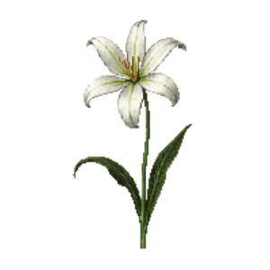

Woodland Spider Lily
Hymenocallis occidentalis

Woodland Spider Lily is a bulb for bulb layer, focal point, suited to shade and partial shade and clay, loam, acid soil or moist ground, flowering Apr, May, Jun.
| Type | Bulb |
|---|---|
| Mature height | 60 cm |
| Spread | 45 cm |
| Aspect | shade and partial shade |
| Foliage | Deciduous |
| Hardiness | USDA 6a-9b, RHS H6 |
| Pollinator-friendly | Yes |
| Pet-safe | No |
Where to use it in a border
At around 60 cm, it sits best toward the back of a border, or on its own as a focal point with room around it. Give it about 45 cm of room to spread, roughly 2 to the metre when planted in a drift. It is hardy across USDA zones 6a to 9b and rated H6 by the RHS, so check it suits your area before planting.
It appears in our lists of shade, clay soil, acid soil, wet soil, pollinator-friendly plants.
Flowering through the year
Worth knowing
- It copes with ground that stays wet, which most border plants will not.
- It tolerates acid soil but dislikes shallow chalk.
- It tolerates a shaded, north-facing spot.
- Not recorded as pet-safe; site it away from pets that graze if that matters to you.
- Its flowers are valued by bees and other pollinators.
Good companions
Plants that share its conditions and style, chosen to complement its place in the border:
- Cascade Oregon Grapeto edge in front
- Chinese Wild Gingerto edge in front
- Dusky cranesbill 'Samobor'to edge in front
- False Lily-of-the-Valleyto edge in front
- Fringed Bleeding Heartto edge in front
- Hartweg's Wild Gingerto edge in front
Garden styles
Shade cottage Wildlife garden Woodland
See Woodland Spider Lily set in a full border, with spacing and companions worked out for your own conditions, in Border Builder.
Sources
Bloom timing and hardiness drawn from:
- Lady Bird Johnson Wildflower Center (wildflower.org, 2026-05)
- NC State Extension (plants.ces.ncsu.edu, 2026-05)